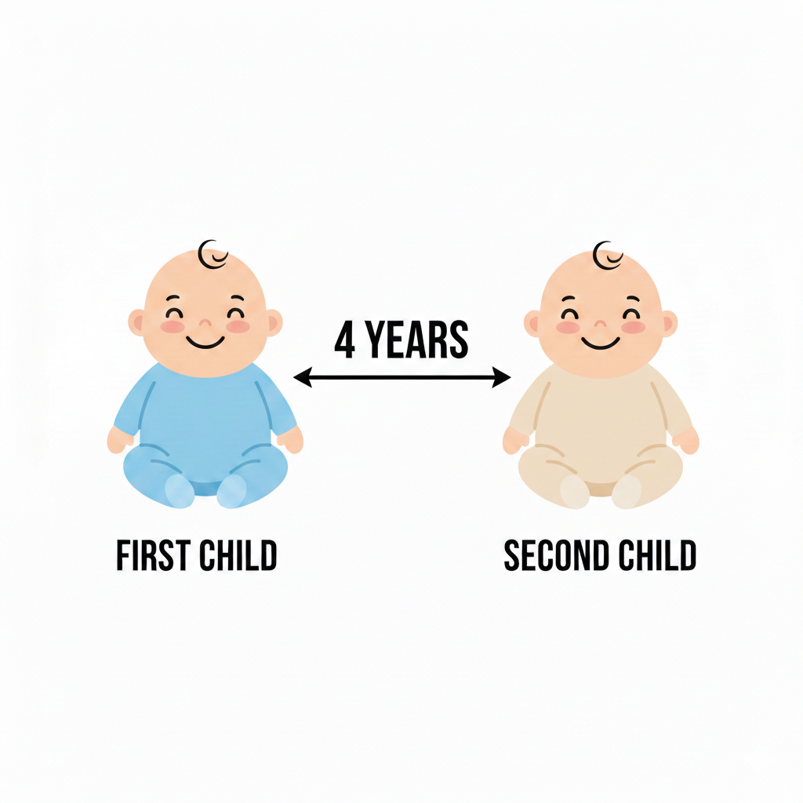

The Common Narrative.
China's one-child policy was officially implemented in 1979, when China's
leadership feared that the country's population will continue to grow rapidly and drain
society's resources. The policy limited most urban families to a single child, sometimes using
brutal reinforcement measures.
While it is true that the Chinese population was still growing in the 1970s, was the policy really justified? Keep scrolling to find out.
Shocker: China's fertility rate dropped long before the policy was implemented!
*Fertility Rate: the avergae number of children a woman has in her lifetime.
The 1960s.
Chinese communist leaders were long concerned with china's growing population. According to
their socialist ideology, more people meant more consumers of the country’s finite resources.
The Cultural Revolution (1966-1976) further emphasized the need for China to develop as fast as
possible and its need for resources. Their solution? Limit the number of babies born.
Family planning is “a necessity of planning in a socialist society” and “benefits national
development and maternal and child health”
--- Hua Guofeng (Mao’s successor), 1978
The 1970s.
Renowned missile scientist Song Jian ventured into the field of population
study
and predicted that Chinese population will surpass 1 billion in 2000. This shocking conclusion led the government to undertake immediate, drastic action.
In 1970, Premier Zhou Enlai announced a five-year plan to control China's population surge.
Then came the "NO MORE THAN TWO" Policy (1972-1976) where each family can only have two pregnancies, and have to be four months apart.

Conclusion.
China's population control was achieved not by the (in)famous one-child policy, but rather two decades of government campaigns prior. The full impact of such a mass-scale population control program is yet to be seen on Chinese society. What is certain, is that China will never be the same as it was before.
END.